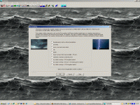
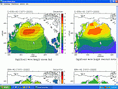

Software
TurboWin
TurboWin version 5.5 for Windows (March 2017)

TurboWin was developed at KNMI (Royal Netherlands Meteorological Institute) with contributions
from several National Meteorological Services and endorsed by the WMO (World Meteorological Organization)
and E-SURFMAR (European Surface Marine Programme). Meteorological observations made on board ships and fixed
sea stations are a substantial component of the World Weather Watch provided that the observation
are accurate and of high quality. The fixed sea stations and VOS (Voluntary Observing Ships) are key
components of the GOS (Global Observing System) and climate research. At the same time, however,
it has been recognised that these observations are subject to keying errors, coding errors,
calculating errors, etc.. To achieve an optimal control of the quality of the observations,
before they are used in real time, the quality control has to be carried out at the root,
by the observers themselves. TurboWin contains observation checking routines which are applied
on the observations before they are transmitted. TurboWin is a user-friendly system with over
200 built-in quality checks. It allows the automated compilation of observations on board ships
and fixed sea stations, their downloading to disk and their subsequent transmission ashore and
thence to a Meteorological Centre, by using Inmarsat, E-mail or other specific communication
facilities. The program assists the observer with many menus, pictures, photos, forms, help pages,
output options, automated calculations etc..
TurboWin+ version 3.0 (November 2017)
Like TurboWin (see above) TurboWin+ serves the same basic purpose of compiling observations.
So the observations reporting in stand alone mode is the same but the modules added to
TurboWin+ are different. E.g. TurboWin+ do not have the add-ons Pilot charts, MeteoClassify
and MetPub47 (see below) and not the option to report phenomena or drifting buoys and Floats deployments.
Features of TurboWin+ which are not available in TurboWin:
Web mode (updates and obs direct via internet)
Displaying and inserting Vaisala barometer PTB330/PTB220 or Mintaka baromter Duo/Star data
EUCAWS (European Automatic Weather Station) interface
Running also on Linux and Mac OS
AMVER reporting
Position check on Google map (if internet available)
MeteoClassify version 2.0 for Windows (April 2005)
A trainings program from the developers of TurboWin. Test your knowledge of cloud, ice and sea state classification.
Download MeteoClassify
Ocean Wave Atlas version 2.0 for Windows and Linux (April 2004)

Climate charts with wave height, direction and period. Climate is by definition the synthesis
of weather conditions in a given area, characterized by long-term statistics (mean values, standard
deviations, etc.) of the meteorological elements in that area. According to the World Meteorological
Organization (WMO) it should preferably be based on 30 years of data. To conform with this recommendation
the mean wave climate information we provide was based on 30 years of ERA-40 data from 1971 to 2000.
The data is of high quality, especially in terms of monthly means and other longer-term statistics,
when compared with competing datasets.
MetPub47 version 1.1 for Windows (March 2007)
This program helps with collecting metadata for WMO
Publication No. 47. WMO Publication No. 47 (Pub47),
the International List of Selected, Supplementary and
Auxiliary Ships, contains details about the names, call signs,
ship layout, types of instrumentation and methods of
observation used on VOS ships. It relies on the regular submission
of metadata from National Meteorological Services operating
VOS programmes, nominally on a quarterly basis.
Accurate details about the method of observation and
instrument type, instrument exposure, instrument calibration dates
and ship layout, are vital if the objectives and desired
accuracies of (VOS) climate monitoring programs are to be achieved.
){kind=link}
){kind=link}
){kind=link}
){kind=link}
){kind=link}